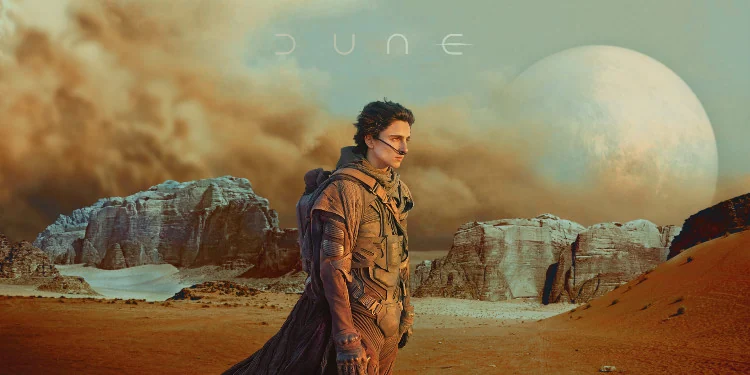

Dune Evreni: Çevre, Din ve İktidarın Zamansız Alegorisi
Frank Herbert’in 1965’te yayımladığı Dune, bilim kurgu türünün ötesine geçerek siyaset bilimi, ekoloji, din sosyolojisi ve ekonomi-politik alanlarını bir araya getiren çok katmanlı bir romandır. Hikâye, çöl gezegeni Arrakis üzerinde geçer ve evrendeki en değerli kaynak olan melanj (baharat) üzerinden şekillenen küresel güç mücadelesini anlatır.
Arrakis ve Ekolojik Sistem
Arrakis, su kaynaklarının yok denecek kadar az olduğu, tamamen çölleşmiş bir gezegendir. Bu sert çevresel koşullar, yalnızca yaşam biçimlerini değil aynı zamanda politik ve ekonomik düzeni de belirler. Roman, ekolojik kıtlığın medeniyet yapıları üzerindeki doğrudan etkisini çarpıcı şekilde ortaya koyar.
Melanj (Baharat) ve Stratejik Güç
Melanj, yalnızca bir kaynak değil; uzay yolculuğunu mümkün kılan, yaşam süresini uzatan ve bilinç genişlemesi sağlayan stratejik bir maddedir. Bu nedenle evrendeki tüm siyasi güçlerin kontrol etmeye çalıştığı merkezî bir enerji ve ekonomi unsurudur.
İktidar Yapıları ve Feodal Sistem
Dune evreni, imparatorluk, büyük hanedanlar ve siyasi fraksiyonlar arasında bölünmüş feodal bir güç yapısı sunar. Bu sistemde ittifaklar, ihanetler ve stratejik hamleler, galaktik ölçekte güç dengelerini sürekli olarak değiştirir.
Din, Kehanet ve Manipülasyon
Roman, dinin kitle kontrolü ve siyasi meşruiyet aracı olarak nasıl kullanılabileceğini Fremen kültürü üzerinden detaylı şekilde işler. Bene Gesserit tarikatının genetik ve dini planlamaları, inanç sistemlerinin nasıl mühendislik ile şekillendirilebileceğini gösterir.
Paul Atreides ve Mesih Arketipi
Paul Atreides karakteri, kehanetler ve politik zorunluluklar arasında sıkışmış bir “mesih figürü” olarak sunulur. Onun yükselişi, bireysel irade ile toplumsal beklentiler arasındaki çatışmayı temsil eder ve kaçınılmaz güç yozlaşmasını sorgular.
Fremen Kültürü ve Hayatta Kalma Stratejisi
Fremenler, Arrakis’in ekstrem koşullarına uyum sağlamış yerli halktır. Su yönetimi, toplumsal dayanışma ve çevresel adaptasyon becerileri, onları hem kültürel hem de ekolojik açıdan güçlü bir topluluk haline getirir.
Kitap Eleştirisi
Dune, bilim kurgu edebiyatında yalnızca bir hikâye değil, aynı zamanda politik teori ve felsefi analiz metni olarak da değerlendirilebilir. Frank Herbert’in en güçlü yönü, ekoloji, din ve iktidar gibi karmaşık kavramları tek bir anlatı içinde bütünleştirebilmesidir. Bu yönüyle eser, sadece bir dünya inşası değil, aynı zamanda sistem eleştirisidir.
Bununla birlikte romanın dili zaman zaman yoğun, anlatımı ise detaylı ve yavaş ilerleyen bir yapıdadır. Bu durum bazı okuyucular için zorlayıcı olabilir. Ayrıca karakter gelişiminden çok fikir ve sistem anlatımına odaklanması, hikâye merkezli roman arayanlar için dezavantaj oluşturabilir.
Buna rağmen Dune, hem bilim kurgu türünün hem de politik alegori edebiyatının en önemli eserlerinden biri olarak kabul edilir. Modern dünyada kaynak savaşları, enerji politikaları ve çevresel krizler açısından hâlâ güçlü bir referans noktasıdır.
Sonuç
Dune, yalnızca bir bilim kurgu romanı değil; çevre, din ve iktidar ilişkilerini analiz eden çok katmanlı bir düşünce sistemidir. Günümüz dünyasının politik ve ekolojik sorunlarını anlamak için hâlâ güncelliğini koruyan zamansız bir eserdir.